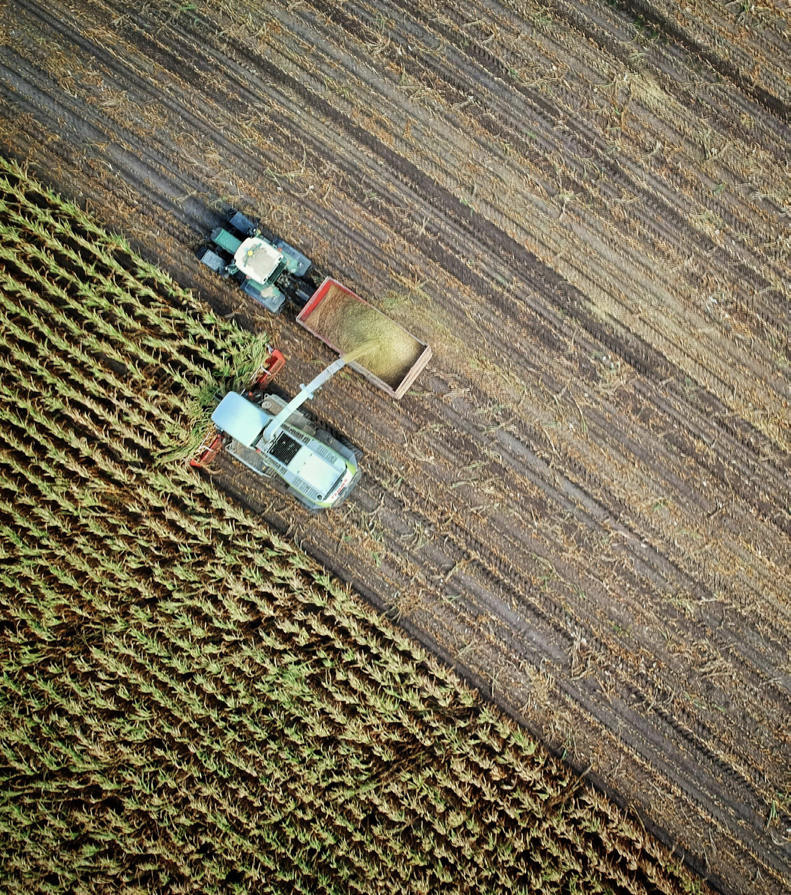
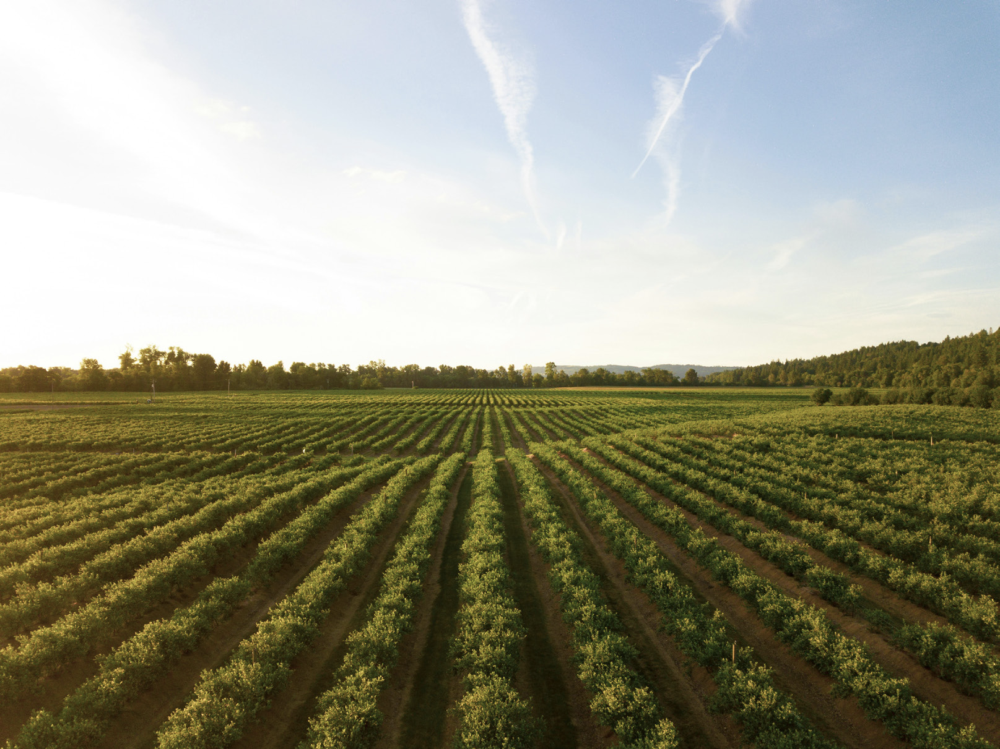

Expansión sostenible que asegura calidad y rentabilidad en cada cosecha.
Descargar Manual de MarcaLa marca es un esquema de diseño compuesto por elementos fundamentales que se combinan para crear un aspecto distintivo. Con una identidad fuerte, Hito 7 busca permanecer en la mente del consumidor final y facilitar el crecimiento de nuestros clientes.
Insumos agrícolas, alquiler de tierras, siembras en sociedad y oportunidades de inversión agroindustrial: somos un socio integral para productores, industrias y fondos.
Combinamos tecnología avanzada, prácticas sostenibles y modelos de asociación transparentes para maximizar el retorno y la confiabilidad de cada proyecto.
Buscamos impulsar un ecosistema agrícola dinámico y sostenible en el Chaco paraguayo, contribuyendo al desarrollo económico regional y al valor compartido.
Impulsar el crecimiento agrícola en Paraguay mediante prácticas innovadoras y sostenibles, ofreciendo productos de alta calidad que contribuyan al desarrollo económico y social de la región, mientras consolidamos relaciones de confianza con nuestros clientes.


"Hito 7 nos ayuda a obtener cosechas más rentables sin comprometer el suelo" — Productor asociado
"La transparencia en las operaciones nos dio confianza para invertir" — Inversora agroindustrial
"Con su soporte tecnológico hemos optimizado nuestros procesos" — Industria colaboradora
Construyamos juntos relaciones de confianza que potencien tu producción.